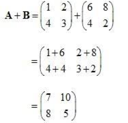
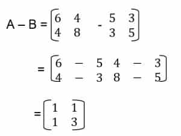
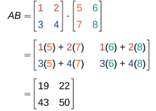

' 
PENJUMLAHAN MATRIKS
PERKALIAN MATRIKS
PENGURANGAN MATRIKS


Penjumlahan matriks dilakukan antara dua matriks yang memiliki ukuran
yang sama, artinya jumlah baris dan kolom keduanya identik. Operasi
penjumlahan ini dilakukan dengan menambahkan setiap elemen matriks
pertama dengan elemen yang sejajar (berada di baris dan kolom yang sama)
di matriks kedua. Hasilnya adalah matriks baru dengan ukuran yang sama
seperti matriks asalnya dan setiap elemen dihasilkan dengan menjumlahkan
elemen-elemen yang sesuai.
Pengurangan matriks dilakukan antara dua matriks yang memiliki ukuran
yang sama, yaitu jumlah baris dan kolom keduanya identik.
Operasi
pengurangan matriks dilakukan dengan mengurangkan setiap elemen matriks
pertama dengan elemen yang sejajar (berada di baris dan kolom yang sama)
di matriks kedua. Hasilnya adalah matriks baru dengan ukuran yang sama
seperti matriks asalnya, dan setiap elemen dihasilkan dengan
mengurangkan elemen-elemen yang sesuai.
Perkalian matriks adalah operasi matematika yang menghasilkan matriks
baru dengan menggabungkan baris dari matriks pertama dengan kolom dari
matriks kedua secara berurutan, mengalikan elemen-elemen yang sesuai,
dan menjumlahkannya untuk mendapatkan elemen matriks hasil.